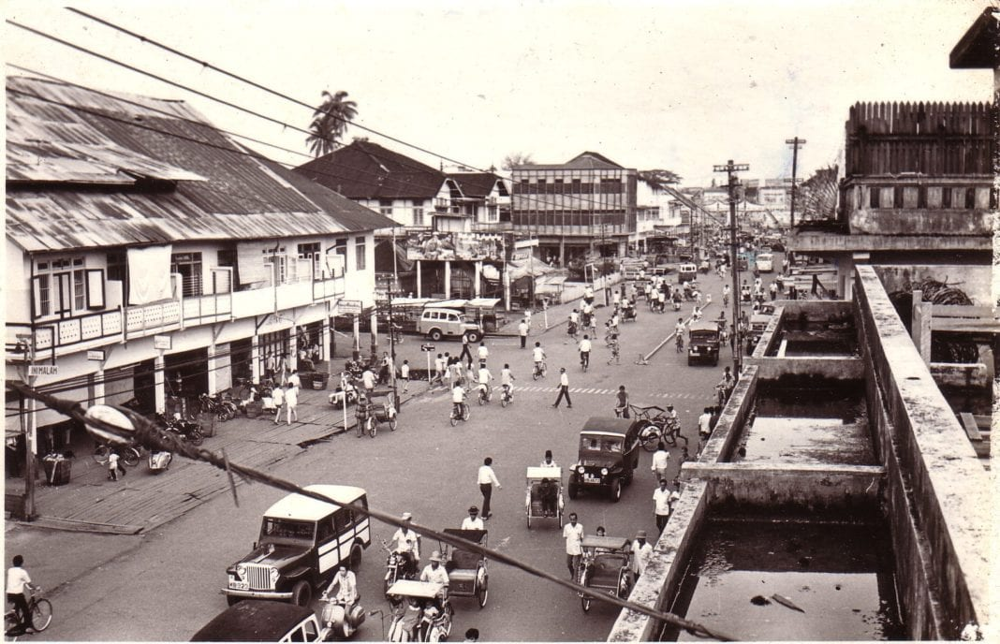
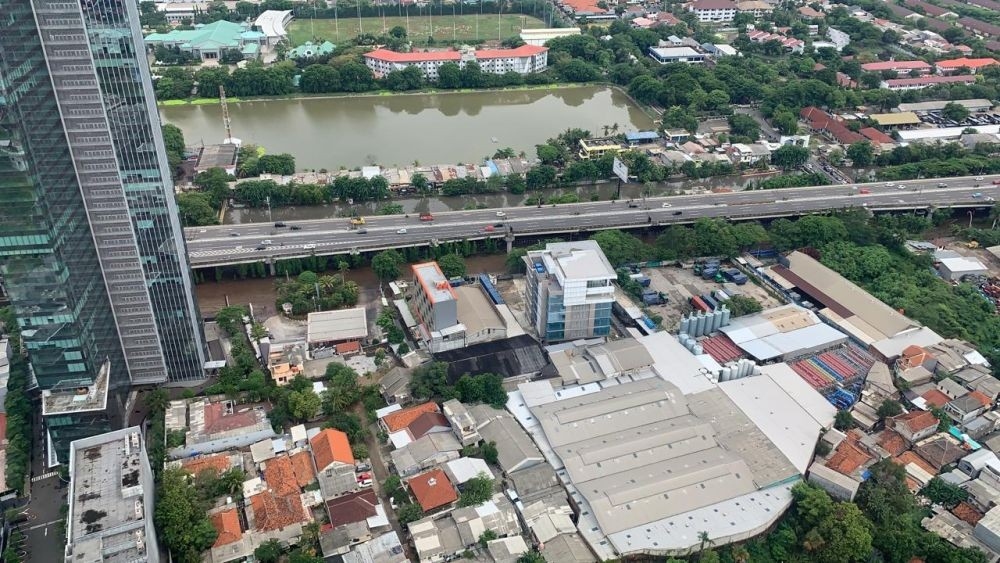
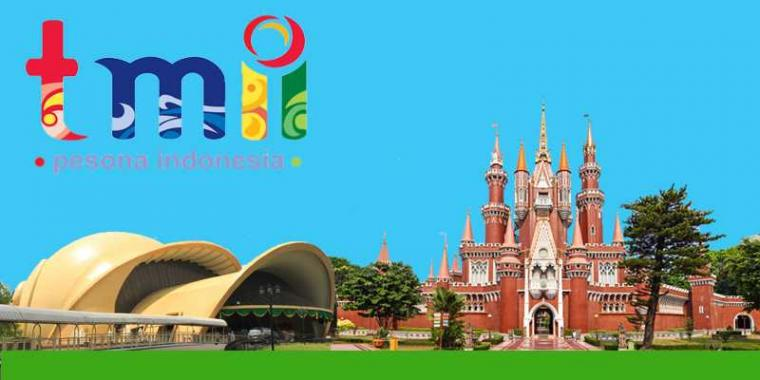
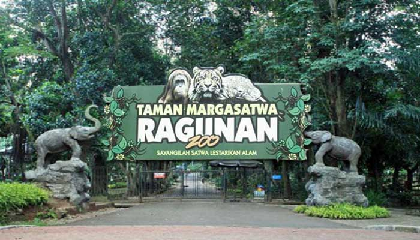

Sejarah

Dahulu pernah dikenal dengan beberapa nama di antaranya Sunda
Kelapa, Jayakarta, dan Batavia.
Sejak kemerdekaan sampai sebelum tahun 1959, Djakarta merupakan
bagian dari Provinsi Jawa Barat. Pada tahun 1959, status Kota
Djakarta mengalami perubahan dari sebuah kotapraja di bawah wali
kota ditingkatkan menjadi daerah tingkat satu (Dati I) yang dipimpin
oleh gubernur. Yang menjadi gubernur pertama ialah Soemarno
Sosroatmodjo, seorang dokter tentara. Pengangkatan Gubernur DKI
waktu itu dilakukan langsung oleh Presiden Sukarno. Pada tahun 1961,
status Djakarta diubah dari Daerah Tingkat Satu menjadi Daerah
Chusus Ibukota (DCI, sekarang dieja Daerah Khusus Ibukota/DKI) dan
gubernurnya tetap dijabat oleh Sumarno.
Geografis

Jakarta berlokasi di sebelah utara Pulau Jawa, di muara Ciliwung,
Teluk Jakarta. Jakarta terletak di dataran rendah pada ketinggian
rata-rata 8 meter dpl. Hal ini mengakibatkan Jakarta sering dilanda
banjir. Sebelah selatan Jakarta merupakan daerah pegunungan dengan
curah hujan tinggi. Jakarta dilewati oleh 13 sungai yang semuanya
bermuara ke Teluk Jakarta. Sungai yang terpenting ialah Ciliwung,
yang membelah kota menjadi dua. Sebelah timur dan selatan Jakarta
berbatasan dengan provinsi Jawa Barat dan di sebelah barat
berbatasan dengan provinsi Banten.
Kepulauan Seribu merupakan kabupaten administratif yang terletak di
Teluk Jakarta. Sekitar 105 pulau terletak sejauh 45 km (28 mil)
sebelah utara kota.
Wisata
Jakarta merupakan salah satu destinasi wisata yang cukup baik di
Indonesia. Untuk meningkatkan jumlah wisatawan yang berkunjung ke
Jakarta, pemerintah mengadakan program "Enjoy Jakarta". Beberapa
tempat pariwisata yang terkenal dan biasa dikunjungi oleh para
wisatawan lokal dan mancanegara di antaranya adalah Taman Mini
Indonesia Indah, Pulau Seribu, Kebun Binatang Ragunan, dan Taman
Impian Jaya Ancol (termasuk taman bermain Dunia Fantasi dan Seaworld
Indonesia). Disamping itu Jakarta juga memiliki banyak tempat wisata
sejarah, yakni berupa museum dan tugu. Diantaranya adalah Museum
Gajah, Museum Fatahillah, dan Monumen Nasional. Disamping tempat
wisatanya yang memadai, saat ini di Jakarta telah tersedia sekitar
219 hotel berbintang, 3.173 restoran, dan 40 balai pertemuan.[65]
Hampir semua jaringan hotel kelas dunia telah membuka gerainya di
Jakarta, seperti JW Marriott Jakarta, The Ritz-Carlton Jakarta,
Shangri-La Hotel, dan Grand Hyatt Jakarta.
Taman Mini Indonesia Indah

Lokasi
Taman Mini Indonesia Indah (TMII) merupakan suatu kawasan taman
wisata bertema budaya Indonesia di Jakarta Timur.
Ragunan

Ragunan dikenal karena Kebun Binatang Ragunan, yaitu taman hutan
hujan besar dengan pusat primata, gajah, dan harimau Sumatra,
serta jalan setapak teduh yang populer di kalangan para pelari.